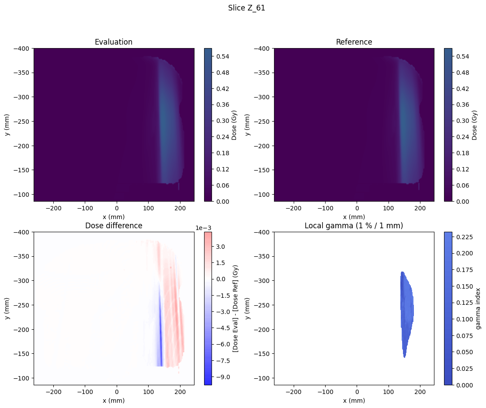
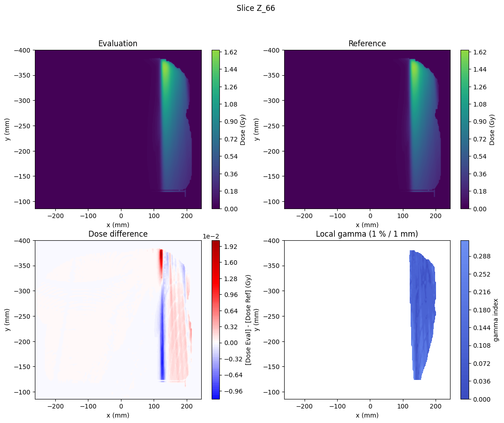
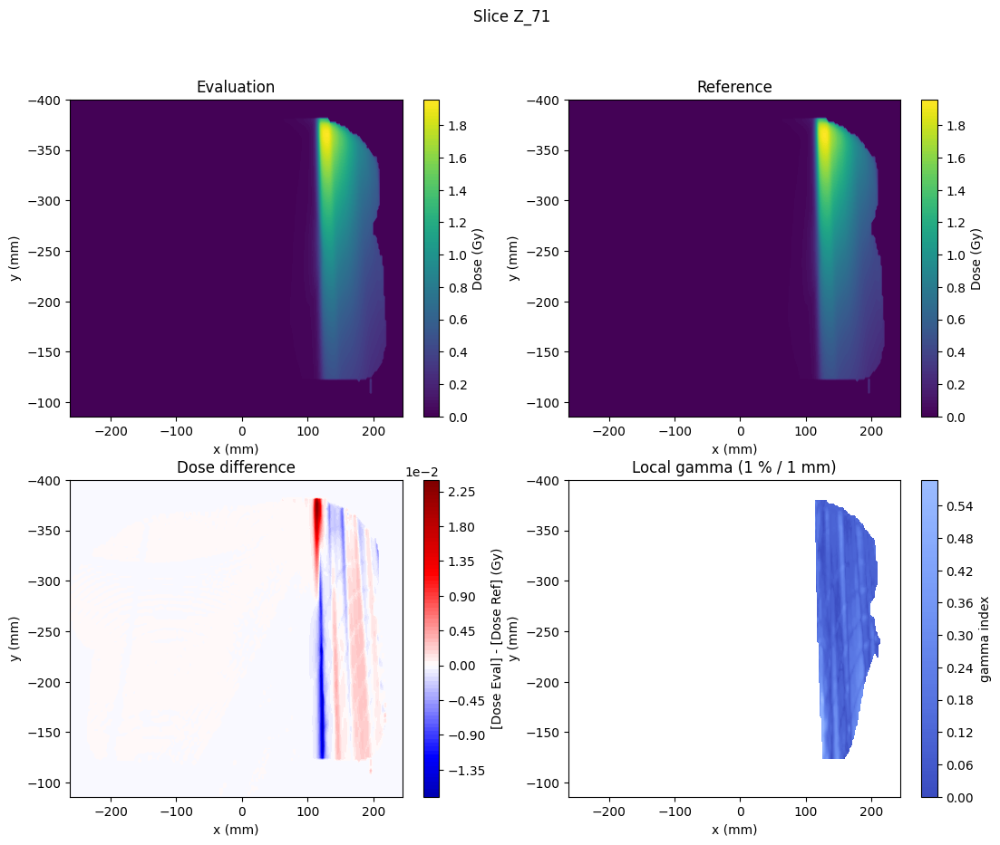
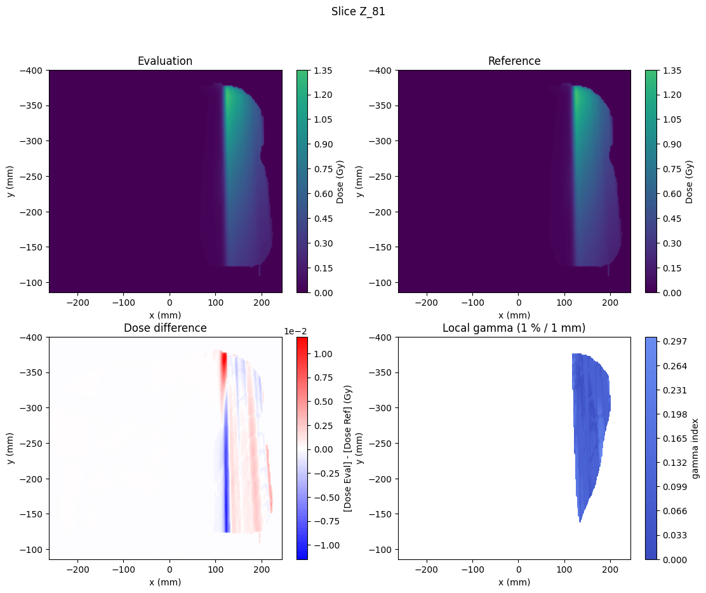
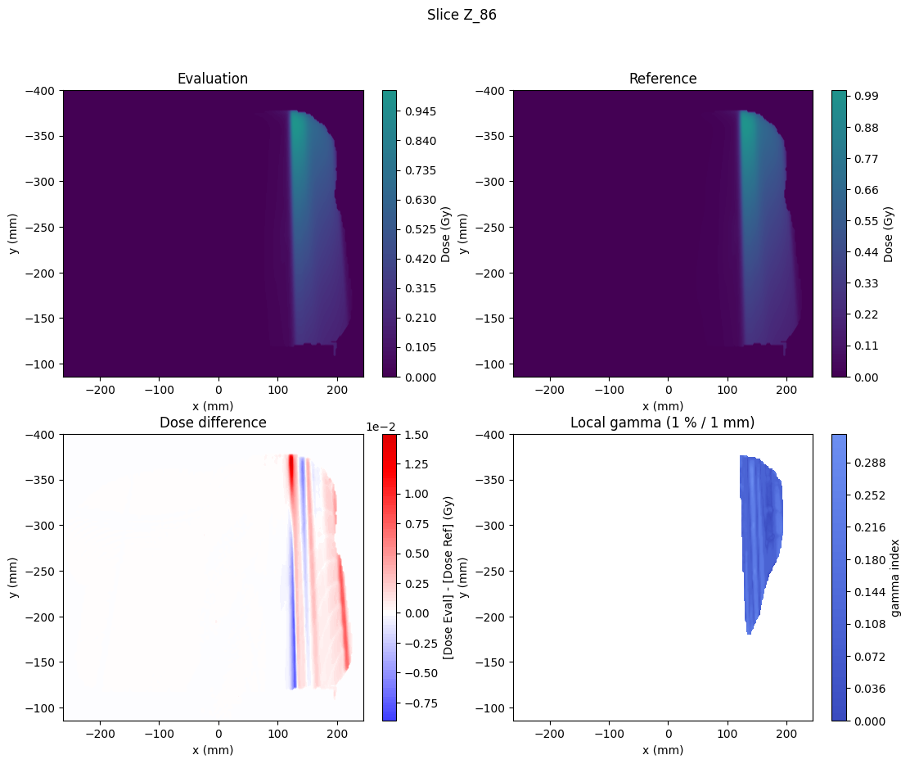
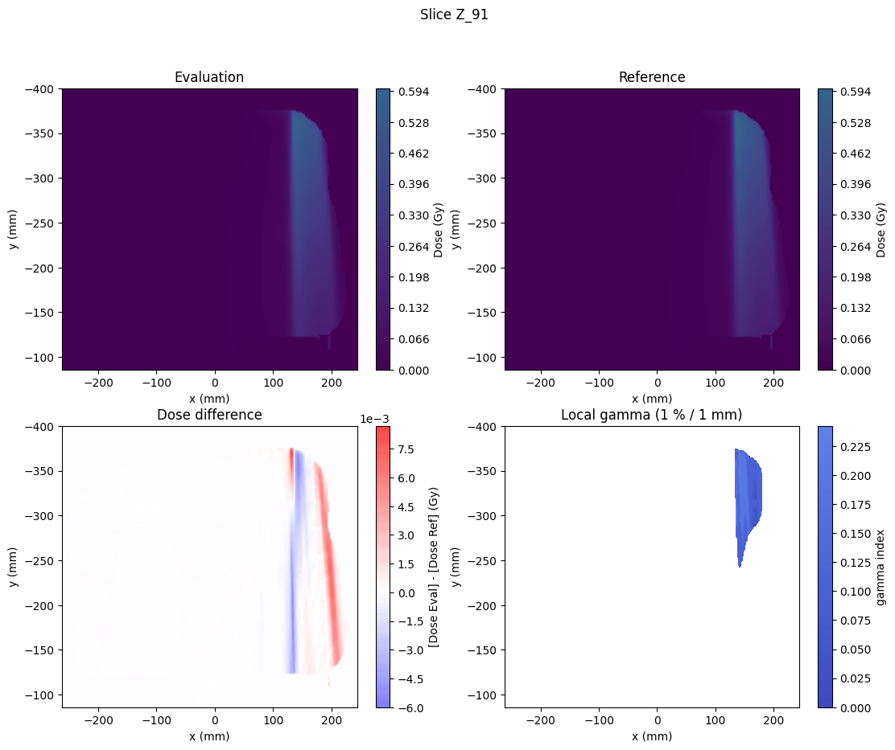

Gamma from DICOM#
PyMedPhys has multiple ways to calculate Gamma. There are also a range of interfaces that can be used. Presented here is a simplified interface which receives as its input two DICOM file paths for the purpose of directly calculating Gamma from a pair of RT DICOM dose files.
import numpy as np
import matplotlib.pyplot as plt
!pip install pydicom pymedphys
import pydicom
import pymedphys
Requirement already satisfied: pydicom in /home/runner/work/pymedphys/pymedphys/.venv/lib/python3.12/site-packages (2.4.4)
Requirement already satisfied: pymedphys in /home/runner/work/pymedphys/pymedphys/.venv/lib/python3.12/site-packages (0.41.0.dev0)
Requirement already satisfied: setuptools in /home/runner/work/pymedphys/pymedphys/.venv/lib/python3.12/site-packages (from pymedphys) (70.1.0)
Requirement already satisfied: tomlkit in /home/runner/work/pymedphys/pymedphys/.venv/lib/python3.12/site-packages (from pymedphys) (0.12.5)
Requirement already satisfied: typing-extensions in /home/runner/work/pymedphys/pymedphys/.venv/lib/python3.12/site-packages (from pymedphys) (4.12.2)
Getting the demo DICOM files#
Let’s download some demo files for the purpose of demonstrating gamma_dicom usage.
reference_filepath = pymedphys.data_path("original_dose_beam_4.dcm")
reference_filepath
PosixPath('/home/runner/.pymedphys/data/original_dose_beam_4.dcm')
evaluation_filepath = pymedphys.data_path("logfile_dose_beam_4.dcm")
evaluation_filepath
PosixPath('/home/runner/.pymedphys/data/logfile_dose_beam_4.dcm')
reference = pydicom.read_file(str(reference_filepath), force=True)
evaluation = pydicom.read_file(str(evaluation_filepath), force=True)
axes_reference, dose_reference = pymedphys.dicom.zyx_and_dose_from_dataset(reference)
axes_evaluation, dose_evaluation = pymedphys.dicom.zyx_and_dose_from_dataset(evaluation)
(z_ref, y_ref, x_ref) = axes_reference
(z_eval, y_eval, x_eval) = axes_evaluation
Importantly the shape of the coordinates are in the same order as the dose axis order
np.shape(z_ref)
(152,)
np.shape(y_ref)
(158,)
np.shape(x_ref)
(254,)
np.shape(dose_reference)
(152, 158, 254)
Calculate and display Gamma#
gamma_options = {
'dose_percent_threshold': 1,
'distance_mm_threshold': 1,
'lower_percent_dose_cutoff': 20,
'interp_fraction': 10, # Should be 10 or more for more accurate results
'max_gamma': 2,
'random_subset': None,
'local_gamma': True,
'ram_available': 2**29 # 1/2 GB
}
gamma = pymedphys.gamma(
axes_reference, dose_reference,
axes_evaluation, dose_evaluation,
**gamma_options)
valid_gamma = gamma[~np.isnan(gamma)]
num_bins = (
gamma_options['interp_fraction'] * gamma_options['max_gamma'])
bins = np.linspace(0, gamma_options['max_gamma'], num_bins + 1)
plt.hist(valid_gamma, bins, density=True)
#if density is True, y value is probability density; otherwise, it is count in a bin
plt.xlim([0, gamma_options['max_gamma']])
plt.xlabel('gamma index')
plt.ylabel('probability density')
pass_ratio = np.sum(valid_gamma <= 1) / len(valid_gamma)
if gamma_options['local_gamma']:
gamma_norm_condition = 'Local gamma'
else:
gamma_norm_condition = 'Global gamma'
plt.title(f"Dose cut: {gamma_options['lower_percent_dose_cutoff']}% | {gamma_norm_condition} ({gamma_options['dose_percent_threshold']}%/{gamma_options['distance_mm_threshold']}mm) | Pass Rate(\u03B3<=1): {pass_ratio*100:.2f}% \n ref pts: {len(z_ref)*len(y_ref)*len(x_ref)} | valid \u03B3 pts: {len(valid_gamma)}")
# plt.savefig('gamma_hist.png', dpi=300)
Text(0.5, 1.0, 'Dose cut: 20% | Local gamma (1%/1mm) | Pass Rate(γ<=1): 100.00% \n ref pts: 6100064 | valid γ pts: 106910')
Plotting the Dose and the Gamma#
max_ref_dose = np.max(dose_reference)
lower_dose_cutoff = gamma_options['lower_percent_dose_cutoff'] / 100 * max_ref_dose
relevant_slice = (
np.max(dose_reference, axis=(1, 2)) >
lower_dose_cutoff)
slice_start = np.max([
np.where(relevant_slice)[0][0],
0])
slice_end = np.min([
np.where(relevant_slice)[0][-1],
len(z_ref)])
z_vals = z_ref[slice(slice_start, slice_end, 5)]
eval_slices = [
dose_evaluation[np.where(z_i == z_eval)[0][0], :, :]
for z_i in z_vals
]
ref_slices = [
dose_reference[np.where(z_i == z_ref)[0][0], :, :]
for z_i in z_vals
]
gamma_slices = [
gamma[np.where(z_i == z_ref)[0][0], :, :]
for z_i in z_vals
]
diffs = [
eval_slice - ref_slice
for eval_slice, ref_slice
in zip(eval_slices, ref_slices)
]
max_diff = np.max(np.abs(diffs))
for i, (eval_slice, ref_slice, diff, gamma_slice) in enumerate(zip(eval_slices, ref_slices, diffs, gamma_slices)):
fig, ax = plt.subplots(figsize=(13,10), nrows=2, ncols=2)
fig.suptitle('Slice Z_{0}'.format(slice_start+i*5), fontsize=12)
c00 = ax[0,0].contourf(
x_eval, y_eval, eval_slice, 100,
vmin=0, vmax=max_ref_dose)
ax[0,0].set_title("Evaluation")
fig.colorbar(c00, ax=ax[0,0], label='Dose (Gy)')
ax[0,0].invert_yaxis()
ax[0,0].set_xlabel('x (mm)')
ax[0,0].set_ylabel('y (mm)')
c01 = ax[0,1].contourf(
x_ref, y_ref, ref_slice, 100,
vmin=0, vmax=max_ref_dose)
ax[0,1].set_title("Reference")
fig.colorbar(c01, ax=ax[0,1], label='Dose (Gy)')
ax[0,1].invert_yaxis()
ax[0,1].set_xlabel('x (mm)')
ax[0,1].set_ylabel('y (mm)')
c10 = ax[1,0].contourf(
x_ref, y_ref, diff, 100,
vmin=-max_diff, vmax=max_diff, cmap=plt.get_cmap('seismic'))
ax[1,0].set_title("Dose difference")
cbar = fig.colorbar(c10, ax=ax[1,0], label='[Dose Eval] - [Dose Ref] (Gy)')
cbar.formatter.set_powerlimits((0, 0)) #use scientific notation
ax[1,0].invert_yaxis()
ax[1,0].set_xlabel('x (mm)')
ax[1,0].set_ylabel('y (mm)')
c11 = ax[1,1].contourf(
x_ref, y_ref, gamma_slice, 100,
vmin=0, vmax=2, cmap=plt.get_cmap('coolwarm'))
ax[1,1].set_title(
f"{gamma_norm_condition} ({gamma_options['dose_percent_threshold']} % / {gamma_options['distance_mm_threshold']} mm)")
fig.colorbar(c11, ax=ax[1,1], label='gamma index')
ax[1,1].invert_yaxis()
ax[1,1].set_xlabel('x (mm)')
ax[1,1].set_ylabel('y (mm)')
plt.show()
print("\n")





